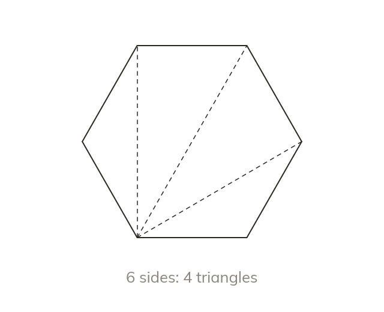
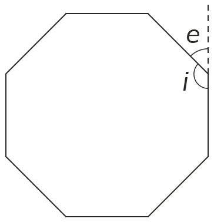
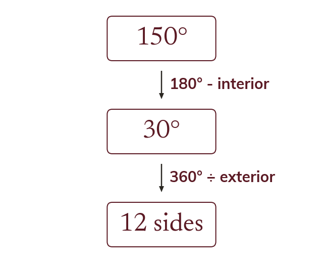
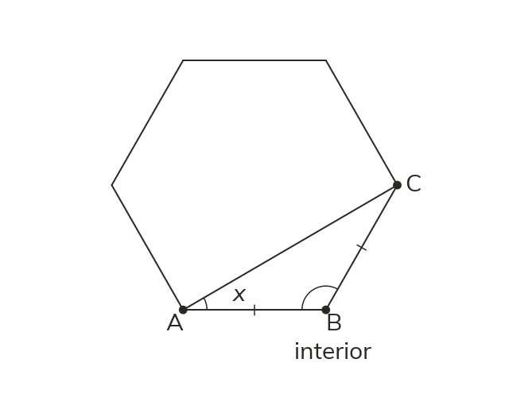
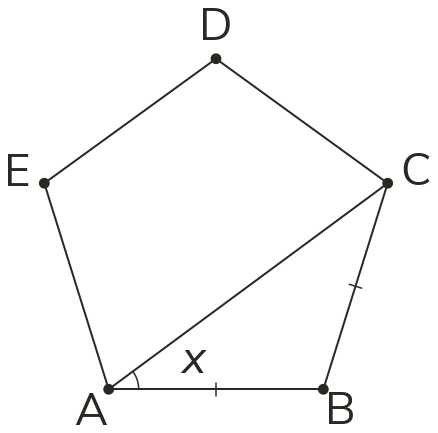
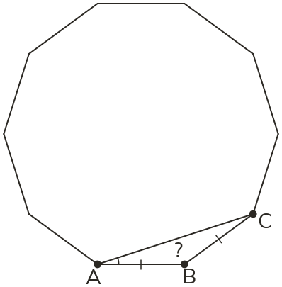
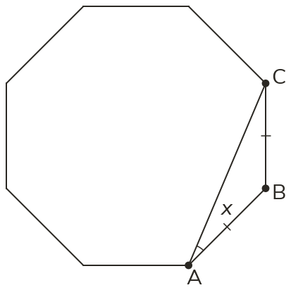

Triangles inside a polygon
Diagonals from one corner split a polygon with n sides into n - 2 triangles. So its interior angles add to 180 × (n - 2) degrees.
Honeycombs, floor tiles and road signs are polygons. One fact about triangles gives the angle total of every one of them.
Work down the page at your own pace. Write every answer in your book first, then click to check it.
Read each card, then follow the worked examples one step at a time.

Diagonals from one corner split a polygon with n sides into n - 2 triangles. So its interior angles add to 180 × (n - 2) degrees.

Walking once round any polygon turns through 360°, so its exterior angles add to 360°. In a regular polygon they are equal, so each one is 360 ÷ n.


Pick an answer. If it's wrong, the feedback tells you which mistake it was.
Read each card, then follow the worked examples one step at a time.

The exterior angles of a regular polygon share 360° equally. So the number of sides is 360 ÷ the exterior angle.

A polygon's angle facts work alongside triangle and parallel-line facts in one diagram. Each step uses one fact and names it.


Pick an answer. If it's wrong, the feedback tells you which mistake it was.

Finished? Next lesson: 10.8.1 Solving Simple Equations.
Log in, then search for a code to practise that skill.